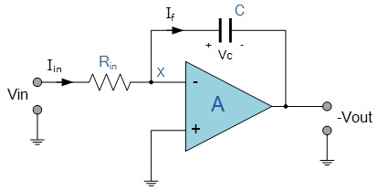

|  |
As its name implies, the Op-amp Integrator is an operational amplifier circuit that performs the mathematical operation of Integration that is we can cause the output to respond to changes in the input voltage over time as the Op-amp integrator produces an output voltage which is proportional to the integral of the input voltage. In other words the magnitude of the output signal is determined by the length of time a voltage is present at its input as the current through the feedback loop charges or discharges the capacitor as the required negative feedback occurs through the capacitor.
When a step voltage, Vin is firstly applied to the input of an integrating amplifier, the uncharged capacitor C has very little resistance and acts a bit like a short circuit allowing maximum current to flow via the input resistor, Rin as potential difference exists between the two plates. No current flows into the amplifiers input and point X is a virtual earth resulting in zero output. As the impedance of the capacitor at this point is very low, the gain ratio of Xc / Rin is also very small giving an overall voltage gain of less than one, (voltage follower circuit).
As the feedback capacitor C begins to charge up due to the influence of the input voltage, its impedance Xc slowly increase in proportion to its rate of charge. The capacitor charged up at a rate determined by the RC time constant, (τ) of the series RC network. Negative feedback forces the Op-amp to produce an output voltage that maintains a virtual earth at the Op-amp’s inverting input.
Since the capacitor is connected between the Op-amp’s inverting input (which is at earth potential) and the Op-amp’s output (which is negative), the potential voltage, Vc developed across the capacitor slowly increases causing the charging current to decrease as the impedance of the capacitor increases. This results in the ratio of Xc / Rin increasing producing a linearly increasing ramp output voltage that continues to increase until the capacitor is fully charged.
At this point the capacitor acts as an open circuit, blocking anymore flow of DC current. The ratio of feedback capacitor to input resistor (Xc / Rin) is now infinite resulting in infinite gain. The result of this high gain (similar to the Op-amps open-loop gain), is that the output of the amplifier goes into saturation as shown below. (Saturation occurs when the output voltage of the amplifier swings heavily to one voltage supply rail or the other with little or no control in between).
The rate at which the output voltage increases (the rate of change) is determined by the value of the resistor and the capacitor, "RC time constant". By changing this RC time constant value, either by changing the value of the Capacitor C, or the Resistor R, the time in which it takes the output voltage to reach saturation can also be changed.